Dokumentation
Name: Daniel Krause-Dehne
Login: dakr5759
Matrikelnummer: 750464
Name: Tom Melchin
Login: tome1220
Matrikelnummer: 750479
Inhaltsverzeichnis
Idee und Grafisches Konzept
Book Fé ist ein Second-Hand-Buch-Café, welches das Ziel hat ein gemütliches Café zu sein und gleichzeitig ein Begegnungsort für Menschen ist mit Veranstaltungen und Buchinteresse. Es soll ein gemütlicher Ort sein zur Entspannung und gleichzeitig eine sehr einladende und inklusive Atmosphäre bieten. Die Webseite für das Café sollte aus diesem Grund einladen wirken, über das Angebot informieren und auch zu Interaktion anregen (wie beispielweise durch Veranstaltungsmeldungen und Buchspenden Hinweise). Grafisch orientiert sich die Webseite an einem gemütlichen und leicht analogen Stil, wobei es farblich an einen modernen Retro-Stil erinnert.
Styletiles
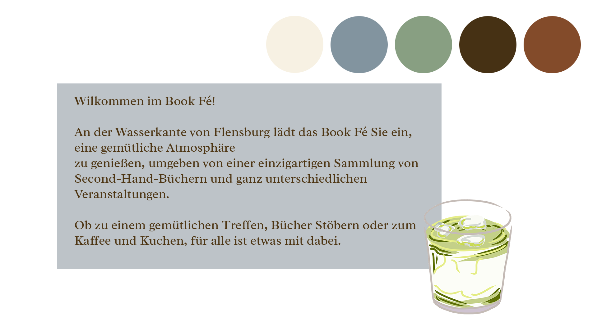Dies ist einer unserer ersten Styletiles, wobei die Schriftart Radley überzeugt hat, jedoch nicht die Farben und das Layout.
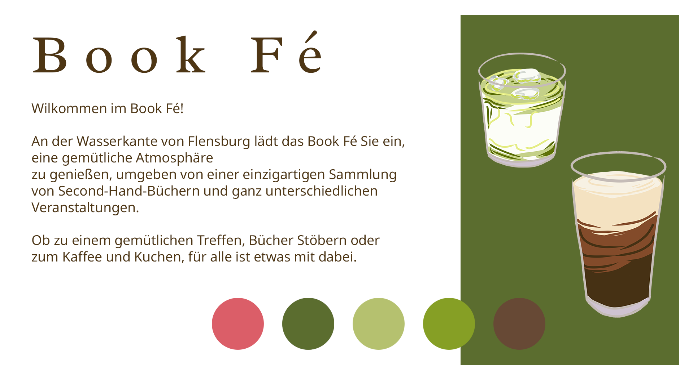Bei diesem Styletile sind die Farben bereits interessanter, jedoch ist die Laufweite von Book Fé zu weit und die Fließtextschrift zu kalt und steril für das Café.
Auswahl des Styletiles mit Begründung
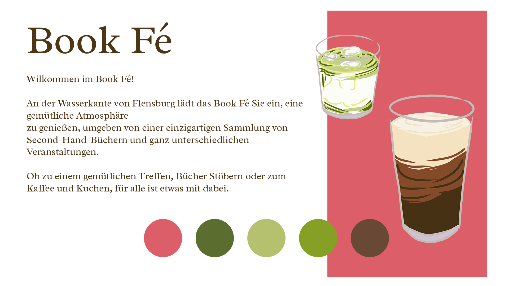Die Auswahl fiel auf diesen Styletile, da die Schriftart zum Café passt und die Farben zu dem Charakter des Second-Hand-Buch Cafés passen. Außerdem gibt es nur eine Schriftart insgesamt und es wird auf überflüssige Dekorationen verzichtet, sodass der Fokus auf den Büchern, Café und Gemeinschaft bleibt. Die hohen Kontraste und klare Typografie machen die Website zudem inklusiv und nutzerfreundlich.
Typografie
Wir verwenden die Schriftart Radley, welche einen freudlichen und einladenden Charakter hat, welches gut zu unserer Second-Hand-Buch-Café Idee passt. Die Schrift wirkt klassisch, jedoch nicht veraltet und erinnert an gedruckte Bücher. Die Serifen sind nicht formell, sondern wirken weich, welches dem Café einen entspannten Ton gibt und das Element der Second-Hand-Bücher unterstützt. Außerdem wirken diese in Kombination mit der organischen Form der Radley warm und einladend. Trotz der Serifen bleibt die Schrift auch bei längeren Texten lesbar (wie zum Beispiel bei den Veranstaltungsbeschreibungen) und ist auch bei kleinen, ssowie großen Bildschirmen gut lesbar.
Farben
Das Farbkonzept der Webseite orientiert sich an einer warmen und einladenden Farben, wobei es eine leicht nostalgische Atmosphäre wiederspiegelt, durch Farben, welche an die 1950er-Jahre erinnern.
Farbpalette
Der warme Rotton wird verwendet für Header, Footer, Buttons und Call-To-Actions. Retro, sanft und einladend.
Das Olivgrün wird verwendet, um die Ruhe zu vermitteln und unterstützt den nachhaltigen Charakter des Cafés.
Der satte Farbton erinnert an Holz und Bücherregale.
Der kräftige Grünton wird verwendet für Kontaste und Hervorhebungen.
Das Gelb wird beim Hovern über die Vegan Abbreviation genutzt und wirkt sonnig und freundlich.
Die Creme-Farbe wird als Hintergrund verwednet, um für angenehme Lesbarkeit der Textelemente zu sorgen und um nicht steril zu wirken. Außerdem wird sie im Header verwendet für die Navigationselemente.
Der Rotton wird für Links verwendet, wenn darüber hovered wird und wirkt warm
Das Grau ist ein neutraler Farbton für Rahmen, Linien und Boxen.
Weiß für Texte auf dunklem Hintergrund - klar und kontrastreich für das Copyright Elment im Footer: © 2025 Book Fé
Layout
Das Layout folgt einer klaren Hierarchie innerhalb der Book Fé Webseite:
- Header: Individueller Header für jedes Layout für die Navigation
- Content-Bereich: Fließender Inhalt mit klaren Sektionen
- Footer: Wichtige Links und Copyright
Besonderheiten
- Mobile: Einspaltiges Layout mit vertikalem Fluss und erweiterbarer Menü-Leiste
- Tablet: Sticky-Header im oberen Bereich mit horizontalem Menü-Layout
- Desktop: Feste Sidebar (Header) links und fließende Informationen im rechten Hauptbereich
- Sticky-Footer: Der Fotter bleibt unten kleben und rückt nicht weiter nach oben, sollte es nicht genug Kontent geben, um die Webseite zu füllen
Raster
Verwendete Rastersysteme:
- CSS Grid für Raster-Anordnungen (z.B. Über Uns: Team-Grid)
- CSS FlexBox für flexible Anordnungen von Elementen (z.B. Bild neben Text)
- Individueller Raster der einzelnen responsiven Layouts auf FlexBox-Basis
Beispiel Team-Grid auf Rasterbasis (2 Spalten für Tabletansicht):
.teamGrid {
display: grid;
grid-template-columns: repeat(2, 1fr);
gap: 1rem;
margin-top: 1rem;
}
Responsives Webdesign
Der Ansatz für ein responsives Webdesign ist Mobile First, wobei unser Basis Layout für alle kleinen Bildschirme optimiert ist. Dabei ist die Navigation reduziert und es gibt eine lineare, vertikale Content-Anordnung mit ausreichend Platz bei Elementen, die klickbar sind.
Komplexeren Elemente, zum Beispiel der Hover-Effekt und der Header als Sidebar werden nur auf größeren Screens aktiviert, um die mobile Nutzung so einfach wie möglich zu gestalten und unnötige Details zu vermeiden.
Auf dem Mobile wird außerdem per JavaScript der Header mit einem Hamburger-Menü ein-/ausgeklappt, um Platz zu sparen und es auf dem Handy benutzerfreundlicher zu gestalten. Ist JavaScript ausgeschaltet, ist das Menü dauerhaft ausgeklappt und kann nicht eingeklappt werden.
Für Abstände, Margins, Paddings usw. werden flexible Einheiten eingesetzt:
rem für Schriftgrößen sowie % und fr für Breiten, um eine gute Skalierbarkeit
sicherzustellen.
Layout-Anpassungen erfolgen über Media Queries, um Layout- und Designansprüche auf verschiedene Bildschirmformate anzupassen.
Verwendete Bilder sind in der Regel mit max-width: 100% und height: auto eingebunden, um ein
Überlaufen zu verhindern.
Erläuterungen zur Umsetzung mit HTML, CSS und JavaScript
Startseite (index.html)
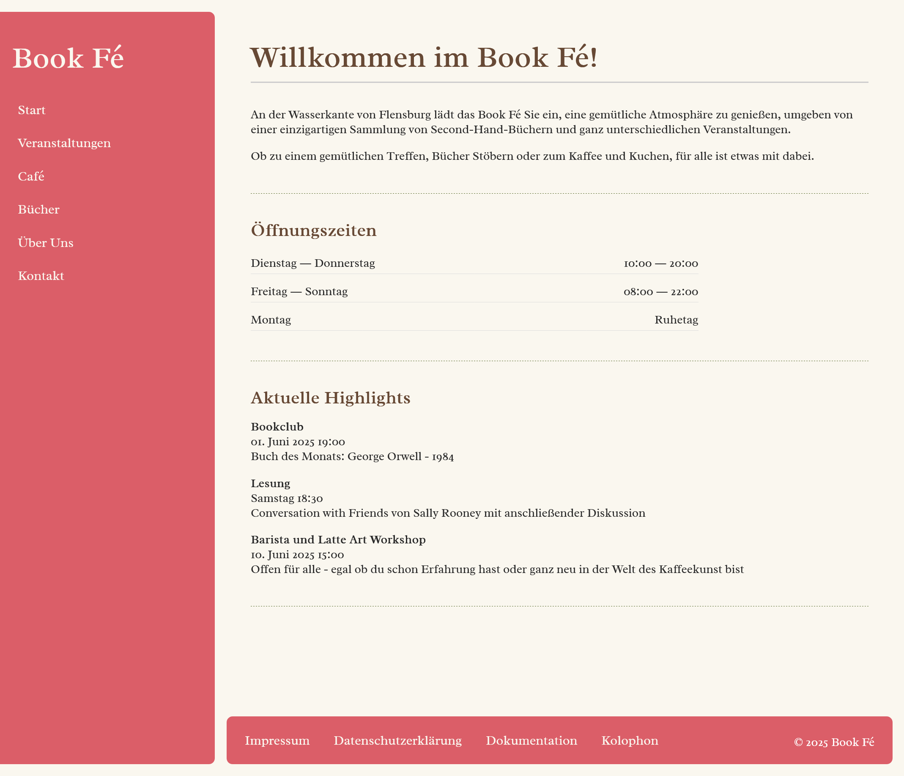Konzept und Funktionen
Die Startseite präsentiert drei zentrale Elemente:
- Willkommensbereich mit kurzer Vorstellung des Cafés
- Öffnungszeiten in übersichtlicher Listenform
- Aktuelle Highlights der nächsten Veranstaltungen
Technische Besonderheiten:
- Responsive Zeitplan: Flexibles Layout für Öffnungszeiten
- Event-Highlights: Klare visuelle Hierarchie
- Mobile Optimierung: Stacked Layout auf kleinen Bildschirmen
Öffnungszeiten Struktur Ausschnitt:
<section>
<div class="oeffnungszeiten">
<h2>Öffnungszeiten</h2>
<ul>
<li>
<div class="tag">Dienstag ― Donnerstag</div>
<div class="zeit">10:00 ― 20:00</div>
</li>
<li>
<div class="tag">Freitag ― Sonntag</div>
<div class="zeit">08:00 ― 22:00</div>
</li>
<li>
<div class="tag">Montag</div>
<div class="zeit">Ruhetag</div>
</li>
</ul>
</div>
</section>
Öffnungszeiten Styling Ausschnitt:
.oeffnungszeiten p {
margin-bottom: 0;
}
.oeffnungszeiten {
margin-bottom: 1rem;
}
.tag {
text-align: left;
}
.zeit {
text-align: right;
}
Veranstaltungen (veranstaltungen.html)
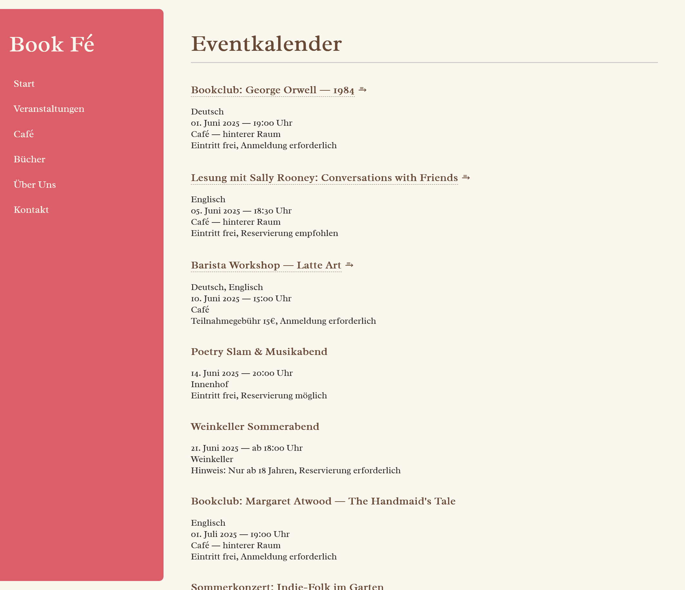Besondere Eigenschaften:
- Intuitiv: Unterstreichung und Pfeil zeigt deutlich eine Navigationsmöglichkeit
- Hover Effekt: Animierter Pfeil und Farbe bei Hover
- Weitere Details: Beim Klicken auf einen Titel kommt der Nutzer zu weiteren Veranstaltungsdatails
Bookclub: George Orwell ― 1984 ⥱
Deutsch
01. Juni 2025 ― 19:00 Uhr
Café ― hinterer Raum
Eintritt frei, Anmeldung erforderlich
Veranstaltungen Struktur Ausschnitt:
<section class="veranstaltungen">
<h1 class="siteHeader">Eventkalender</h1>
<div class="veranstaltung">
<h3>
<a href="veranstaltungenDetail.html" class="veranstaltungLink">
Bookclub: George Orwell ― 1984
</a>
<a class="arrowLink">
⥱
</a>
</h3>
<p>Deutsch<br>
01. Juni 2025 ― 19:00 Uhr <br>
Café ― hinterer Raum<br>
Eintritt frei, Anmeldung erforderlich
</p>
</div>
...weitere Veranstaltungseinträge
</section>
Veranstaltungen Styling Ausschnitt:
.veranstaltungen a {
color: var(--color-main-brown);
padding: 0;
display: inline-block;
transform-origin: left center;
transition: transform 0.3s ease;
}
.veranstaltung {
margin-bottom: 2rem;
}
.veranstaltungLink {
border-bottom: 1px dashed var(--color-main-brown);
transition: color 0.3s ease, border-color 0.3s ease;
}
.veranstaltungLink:hover {
color: var(--color-rich-red);
border-color: var(--color-hover);
}
.arrowLink {
display: inline-block;
transition: transform 0.3s ease, color 0.3s ease;
}
.veranstaltungLink:hover+.arrowLink {
transform: translateX(0.5rem);
color: var(--color-rich-red);
}
Café (cafe.html)
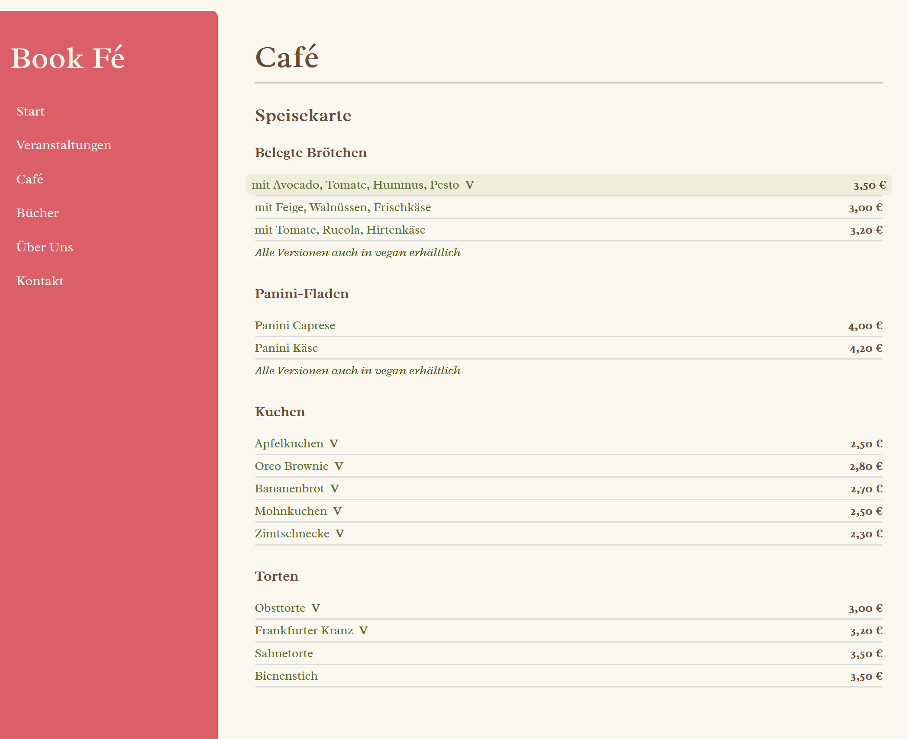Besondere Eigenschaften:
- Vegan Auszeichnung: Beim Hovern über die Vegan Auszeichnung wird die Erklärung angezeigt und beim Anklicken wird zu der Erklärung gescrollt
- Hover Effekt: Für bessere Übersicht innerhalb der Speisekarte, wird bei großen Auflösungen der gehoverte Eintrag visuell hervorgehoben
- Linien-Dicke: Die Linien unter jedem Eintrag werden bei großen Bildschirmbreiten etwas dicker, um eine visuell bessere Verbindung zwischen Produkt und Preis zu schaffen
Speisegruppe Struktur Ausschnitt:
<div> class="speisegruppe"</div>
<h3> Kuchen </h3>
<ul>
<li>
<div class = "gericht" > Apfelkuchen <a href="vegan-definition">
<abbr title="Vegan"<V>/abbr>
</a> </div>
<div>class="preis" < 2,50 € </div>
</li>
...weitere Gerichtseinträge
</ul>
</div>
Speisegruppe Styling Ausschnitt:
.speisegruppe ul {
padding-left: 0;
margin-bottom: 0;
list-style: none;
}
.speisegruppe ul li {
display: grid;
grid-template-columns: 1fr auto;
align-items: center;
padding: 0.25rem 0;
margin-left: -0.5rem;
margin-right: -0.5rem;
}
.speisegruppe ul li a {
padding: 0;
}
.gericht {
color: var(--color-main-green);
font-weight: 500;
white-space: normal;
overflow-wrap: break-word;
padding-left: 0.5rem;
}
.preis {
color: var(--color-main-brown);
font-weight: 600;
text-align: right;
white-space: nowrap;
padding-right: 0.5rem;
}
abbr {
color: var(--color-accent-pink);
font-weight: bold;
padding: 2px 4px;
transition: background-color 0.3s, border-color 0.3s;
text-decoration: none;
border-radius: var(--value-setting-rounding);
cursor: help;
}
abbr:hover {
background-color: var(--color-soft-yellow);
}
/* Hover Effekt für große Bildschirmauflösungen */
.speisegruppe ul li:hover:not(.hinweis),
.getraenkegruppe ul li:hover:not(.hinweis) {
background-color: color-mix(in srgb, var(--color-main-green) 10%, transparent);
border-radius: var(--value-setting-rounding);
transform: scale(1.01);
}
Bücher (buecher.html)
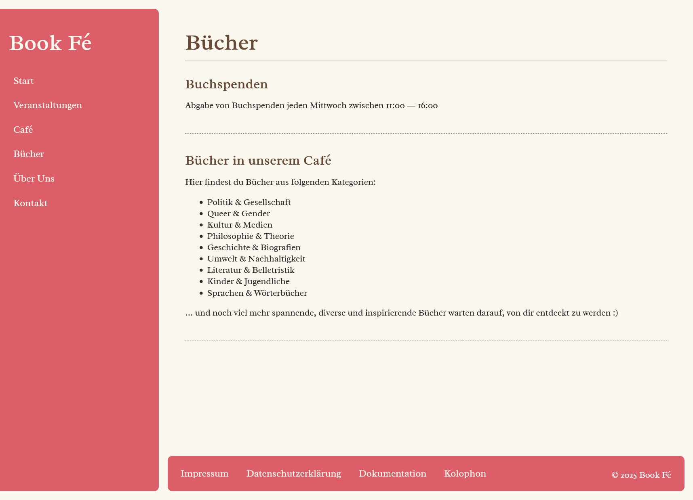Besondere Eigenschaften:
- Kategorienliste: Klare Typografie-Hierarchie
- Buchspenden-Info: Hervorgehobener Hinweisbereich
- Responsive Layout: Optimale Lesbarkeit auf allen Geräten
Buchspenden und Kategorien Struktur Ausschnitt:
<section>
<h1 class="siteHeader">Bücher</h1>
<div class="buchspenden">
<h2>Buchspenden</h2>
<p>Abgabe von Buchspenden jeden Mittwoch zwischen 11:00 ― 16:00</p>
</div>
</section>
<section>
<div class="buecherKategorien">
<h2>Bücher in unserem Café</h2>
<p>Hier findest du Bücher aus folgenden Kategorien:</p>
<ul>
<li>Politik & Gesellschaft</li>
<li>Queer & Gender</li>
...weite Kategorien
</ul>
<p>… und noch viel mehr spannende, diverse und inspirierende Bücher
warten darauf, von dir entdeckt zu werden :)</p>
</div>
</section>
Buchspenden und Kategorien Styling Ausschnitt:
.buchspenden {
margin-top: 0;
padding-top: 0;
}
Da die Teilseite sehr simpel gestaltet ist, wird hier kein großes Styling benötigt.
Über Uns (ueberUns.html)
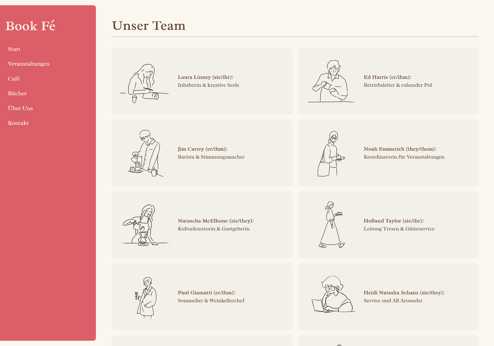Besondere Eigenschaften:
- Responsives Team-Grid: Automatische Anpassung der Spalten und darstellung bei großen Bildschirmgrößen an Karteikarte angelehnt
- Bild-Animationen: Subtile Hover-Effekte für Teammitglieder beo großen Bildschirmgrößen
- Inklusivität: Klare Kennzeichnung der Namen und Pronomen

Laura Linney (sie/ihr): Inhaberin & kreative Seele

Ed Harris (er/ihm): Betriebsleiter & ruhender Pol

Jim Carrey (er/ihm): Barista & Stimmungsmacher

Noah Emmerich (they/them): Koordinatorin für Veranstaltungen
TeamGrid Struktur Ausschnitt:
<div class="teamGrid">
<div class="teamMember">
<img src="../img\Laura Linney.png" alt="Laura Linney">
<p><strong>Laura Linney (sie/ihr):</strong> Inhaberin & kreative Seele</p>
</div>
<div class="teamMember">
<img src="../img/Ed Harris.png" alt="Ed Harris">
<p><strong>Ed Harris (er/ihm):</strong> Betriebsleiter & ruhender Pol</p>
</div>
<div class="teamMember">
<img src="../img/Jim Carrey.png" alt="Michael Jackson">
<p><strong>Jim Carrey (er/ihm):</strong> Barista & Stimmungsmacher</p>
</div>
...weitere Personen
</div>
TeamGrid Styling Ausschnitt:
.teamMember {
display: grid;
grid-template-columns: 80px 1fr;
gap: 1rem;
align-items: center;
margin-bottom: 1rem;
}
.teamMember img {
width: 80px;
height: auto;
}
.teamMember p {
margin: 0;
color: var(--color-main-brown);
font-size: 1rem;
}
.teamMember p {
display: block;
}
.teamMember p strong {
display: block;
margin-bottom: 0.25em;
}
/* Hover-Effekt bei großen Auflösungen */
.teamMember:hover img {
filter: drop-shadow(4px 4px 4px var(--color-main-brown));
transform: scale(1.05);
}
Kontakt (kontakt.html)
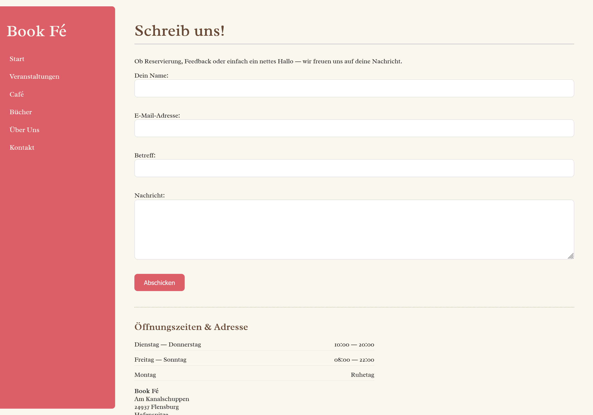Besondere Eigenschaften:
- Formularvalidierung: Client-seitige Überprüfung der Eingaben
- Adressformatierung: Semantisches address-Element
- Responsive Layout: Optimale Darstellung auf Mobilgeräten
Kontaktformular Struktur Ausschnitt:
<div class="kontaktformular">
<h1 class="siteHeader">Schreib uns!</h1>
<p>Ob Reservierung, Feedback oder einfach ein nettes Hallo ― wir freuen uns auf deine Nachricht.</p>
<form action="https://mi.hs-flensburg.de/echo.php" method="post">
<label for="name">Dein Name:</label><br>
<input type="text" id="name" name="name" required><br><br>
<label for="email">E-Mail-Adresse:</label><br>
<input type="email" id="email" name="email" required><br><br>
<label for="betreff">Betreff:</label><br>
<input type="text" id="betreff" name="betreff"><br><br>
<label for="nachricht">Nachricht:</label><br>
<textarea id="nachricht" name="nachricht" rows="6" required></textarea><br><br>
<button type="submit">Abschicken</button>
</form>
</div>
Kontaktformular Styling Ausschnitt:
.kontaktformular input[type="text"],
.kontaktformular input[type="email"],
.kontaktformular textarea {
width: 100%;
padding: 0.75em;
font-size: 1rem;
border: 1px solid #CCCCCC;
border-radius: var(--value-setting-rounding);
box-sizing: border-box;
margin-bottom: 1em;
field-sizing: content;
}
.kontaktformular textarea {
resize: vertical;
min-height: 150px;
}
.kontaktformular button {
padding: 0.75em 1.5em;
font-size: 1rem;
border: none;
background-color: var(--color-main-red);
color: white;
border-radius: var(--value-setting-rounding);
cursor: pointer;
transition: background-color 0.3s ease, transform 0.2s ease;
}
.kontaktformular button:hover {
background-color: var(--color-rich-red);
transform: scale(1.02);
}
Mobile Navigation (mobilemenu.js)

Funktionsweise:
- Hamburger-Menü: JavaScript-gesteuertes Ein-/Ausblenden
- Animationen: Sanfte Übergänge für bessere User-Experience und ein animierter Übergang zur gewünschten Seite gesteuert über JavaScript
- Responsive Layout: Optimale Darstellung auf Mobilgeräten durch große Anklickbare Menüelemente, welche durch die Aus- bzw. Einblendefunktionalität nicht die Webseite verdecken
- Robuste Funktionalität: Ist JavaScript deaktiviert, ist das Menü durchgängig aufgeklappt, um die Funktionalität nicht einzuschränken
JavaScript Ausschnitt:
//Funktion, welche die CSS-Klasse 'ausgefahren' zum Header hinzufügt oder entfernt, je nachdem, ob sie gerade vorhanden ist
//Die Animationen werden über diese Klasse gesteuert
function toggleMenu(header) {
header.classList.toggle("ausgefahren");
}
//Query, um den Menü-Knopf im DOM zu finden
const menuButton = document.querySelector(".menuButton");
//Click-Listener, welcher die toggleMenu Funktion aufruft, um das Aus- bzw. Einblenden zu steuern, wenn der Knopf geklickt wird
menuButton.addEventListener("click", () => {
toggleMenu(header);
});
CSS Ausschnitt:
.menuButton {
display: none;
}
.navigation li {
opacity: 1;
transform: translateY(0);
transition: opacity 0.3s ease, transform 0.3s ease;
}
@media screen and (max-width: 767px) {
header h1 {
margin: 0;
}
nav .navigation {
overflow: hidden;
max-height: 17.5rem;
margin-top: 3rem;
transition: max-height 0.5s ease, margin-top 0.5s ease;
}
header:not(.ausgefahren) nav .navigation {
max-height: 0;
margin-top: 0;
}
header:not(.ausgefahren) .navigation li {
opacity: 0;
transform: translateY(-10px);
pointer-events: none;
}
.headerMobile {
display: flex;
justify-content: space-between;
align-items: center;
}
.menuButton {
display: block;
font-size: 3rem;
margin: 0;
padding: 0;
background: none;
border: none;
color: var(--color-warm-cream);
cursor: pointer;
line-height: 2rem;
transition: transform 0.3s ease;
user-select: none;
}
header .navigation li+li {
margin-top: 1rem;
}
header .navigation li a {
font-size: 1.3rem;
}
header.ausgefahren .menuButton { transform: rotate(90deg); }
header.ausgefahren .navigation li:nth-child(1) { transition-delay: 0.1s; }
header.ausgefahren .navigation li:nth-child(2) { transition-delay: 0.2s; }
header.ausgefahren .navigation li:nth-child(3) { transition-delay: 0.3s; }
header.ausgefahren .navigation li:nth-child(4) { transition-delay: 0.4s; }
header.ausgefahren .navigation li:nth-child(5) { transition-delay: 0.5s; }
header.ausgefahren .navigation li:nth-child(6) { transition-delay: 0.6s; }
header.noTransition * {
transition: none;
}
}
Aufgetretene Probleme und deren Lösung
1. Header-Überlappung im Desktop-Layout
Problem: Der links fixierte Header überlappt den Hauptinhalt.
Lösung: Dem div, das main und den footer umschließt, wurde ein linker Innenabstand (padding-left) hinzugefügt, der der Breite des Headers bzw. der Navigationsleiste und dessen padding entspricht.
.wrapper {
padding-left: 18rem;
}
2. Geöffnete NavBar schließt sich zu Beginn mit Animation
Problem: Die mobile Navigationsleiste soll standardmäßig immer geöffnet sein, damit sie auch ohne aktiviertes JavaScript sichtbar bleibt. Beim ersten Laden der Seite wird sie per JavaScript eingefahren, um das gewünschte Layout darzustellen. Dabei wird die NavBar jedoch animiert eingefahren, was den Nutzer ablenkt und irritiert.
Lösung: Um zu verhindern, dass die mobile Navigationsleiste beim ersten Laden der Seite animiert eingefahren wird, wird eine CSS-Klasse verwendet, die alle Übergänge beim ersten Laden der Seite deaktiviert. Die Übergangsanimation wird für spätere Menüanimationen per JavaScript verwaltet.
header.noTransition * {
transition: none;
}
3. Unüberscihtlichkeit in Speise- und Getränkekarte
Problem: Die Speisekarte mit den Preisen auf der rechten Seite kann (vor allem im Desktop-Layout) unübersichtlich wirken, da in der Zeile verrutscht werden kann und somit der falsche Preis gelesen wird.
Lösung: Um zu verhindern, dass in der Zeile beim Lesen verrutscht wird, gibt es Linien, die visuell leiten und Verbindungen schaffen. Zusätzlich gibt es in der Desktop-Ansicht einen Hover-Effekt in der Zeile, auf der sich der Cursor befindet.
.speisegruppe ul li:hover:not(.hinweis),
.getraenkegruppe ul li:hover:not(.hinweis) {
background-color: color-mix(in srgb, var(--color-main-green) 10%, transparent);
border-radius: var(--value-setting-rounding);
transform: scale(1.01);
}
4. Nicht-Erkennen von Links
Problem: Es war nicht ersichtlich, dass ein Eventtitel (in Veranstalltungen) angeklickt werden kann, um weitere Details einsehen zu können.
Lösung: Um die Navigationsmöglichkeit deutlich erkennbar zu machen, wurde der Eventtitel unterstrichen, ein Pfeil am Ende hinzugefügt und ein Hover-Effekt erstellt.
.veranstaltungLink {
border-bottom: 1px dashed var(--color-main-brown);
transition: color 0.3s ease, border-color 0.3s ease;
}
.veranstaltungLink:hover {
color: var(--color-rich-red);
border-color: var(--color-hover);
}
.arrowLink {
display: inline-block;
transition: transform 0.3s ease, color 0.3s ease;
}
.veranstaltungLink:hover+.arrowLink {
transform: translateX(0.5rem);
color: var(--color-rich-red);
}
4. Lange Nachrichten im Kontaktfromular anzeigen
Problem: Wenn der Nutzer eine längere Nachricht in das Nachrichtenfeld schreibt, kann die Nachricht nicht als ganzes angezeigt werden.
Lösung: Der Nutzer kann das Feld manuell vergrößern. Bei verwendung eines Browsers auf Basis von Chromium, wird das eingabefeld sogar automatisch erweitert.
.kontaktformular textarea {
resize: vertical;
min-height: 150px;
field-sizing: content;
}
5. Farbkontraste
Problem: Bei der ersten Farbauswahl gab es nicht ausreichend Kontraste für Barrierefreiheit und gute Lesbarkeit im Generellen.
Lösung: Die Farbauswahl wurde vollständig angepasst für bessere Schrift-Hintergrund Kontraste.
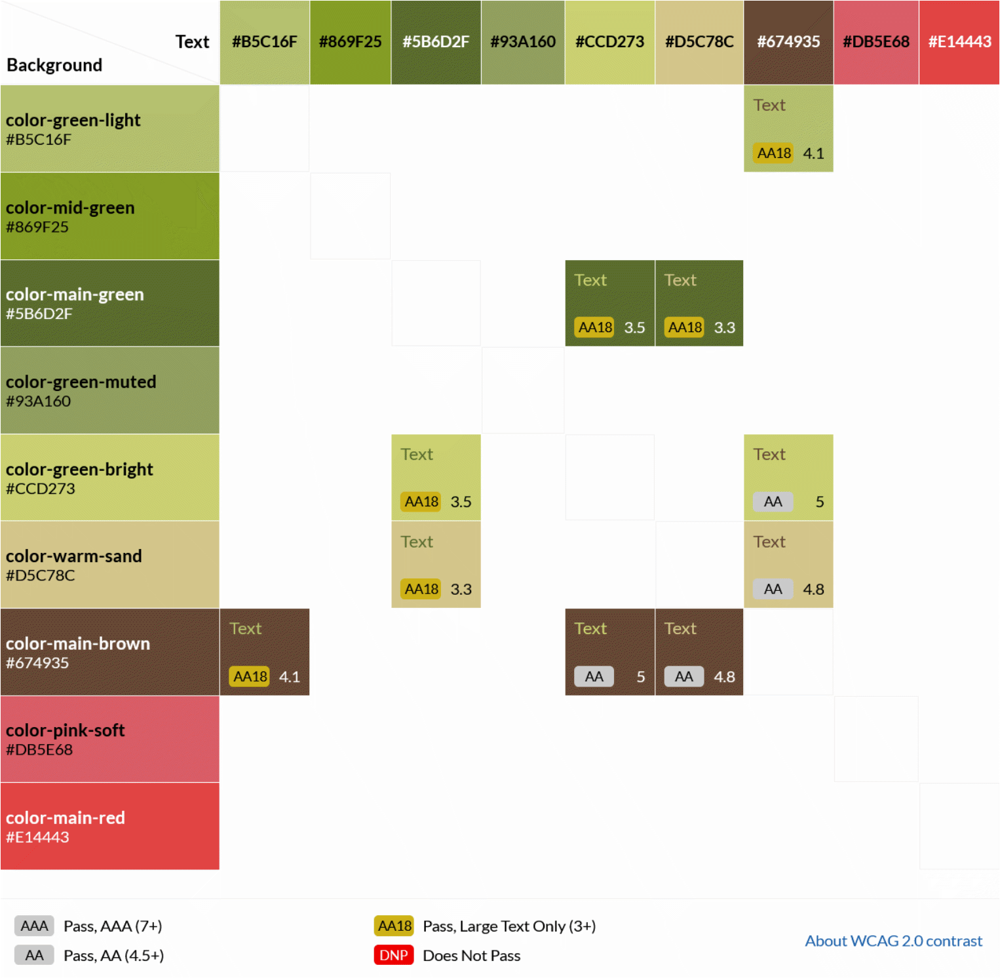 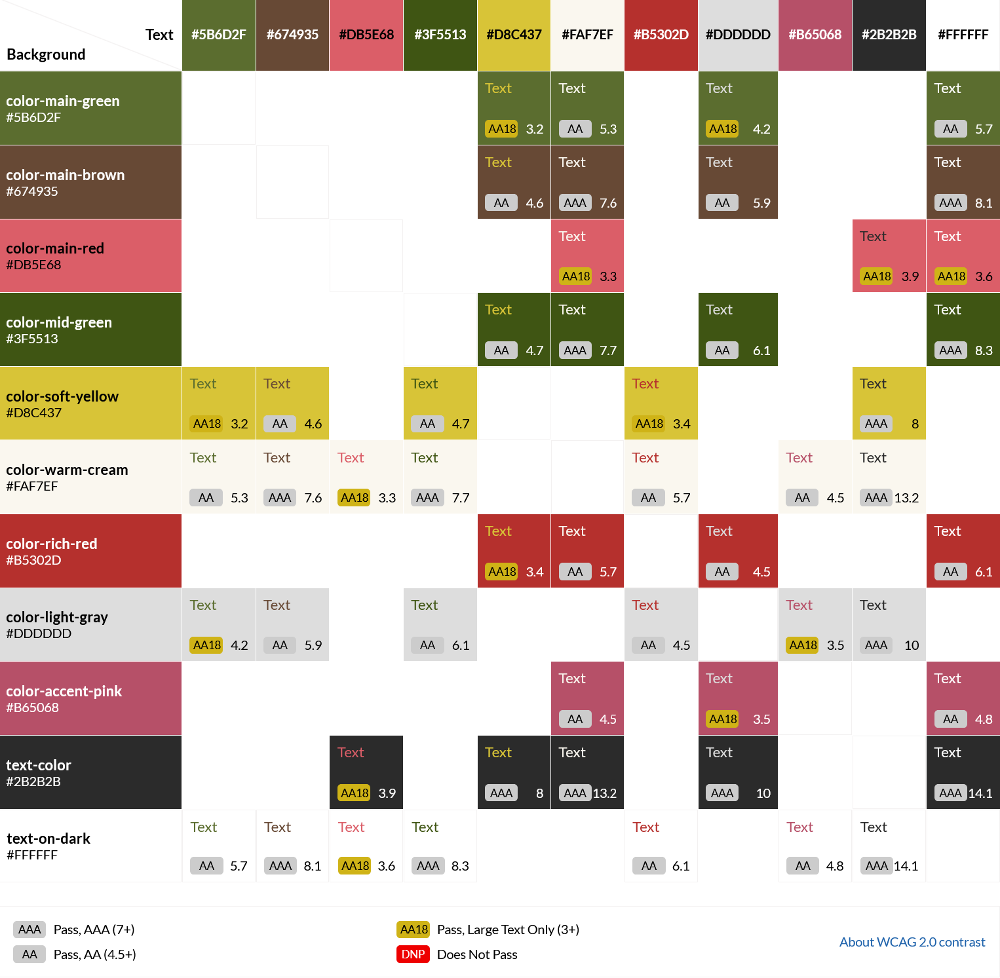6. Sub-Pixel-Problem
Problem: Bei der Verwendung von Media Queries wie @media (max-width: 767px), @media (min-width: 768px) and (max-width: 1023px) und @media (min-width: 1024px) kann es zu Problemen kommen, wenn die Bildschirmbreite durch Subpixel-Berechnung exakt dazwischenliegt ― z. B. bei 767.5px. In solchen Fällen trifft keine der definierten Media Queries zu, da jede nur ganzzahlige Bereiche ohne Überlappung abdeckt. Dadurch kann das Layout unerwartet ohne Styles dastehen oder falsch dargestellt werden. Das liegt am Subpixel-Rendering mancher Browser, die Zwischenwerte erzeugen und und vielen Browsern nicht gerundet werden.
Lösung: Die Media Queries wurden abgeändert, dass keine Lücken entstehen. So werden auch Subpixel-Breiten wie 767.5px oder 1023.3px korrekt erfasst.
@media screen and (min-width: 767.01px) and (max-width: 1023px) {
...
}
@media screen and (min-width: 1023.01px) {
...
}